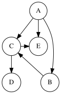
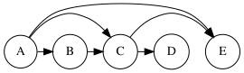

Directed Acyclic Graph (DAG)¶
A directed graph that contains no cycles is called a Directed Acyclic Graph (DAG). These graphs are widely used in applications such as task scheduling, dependency resolution, and data processing pipelines. Since no cycles exist, we can topologically sort the graph's nodes.
def has_cycle(graph):
# Function to check for cycles
visited = set()
recursion_stack = set()
def dfs(node):
if node not in visited:
visited.add(node)
recursion_stack.add(node)
for neighbor in graph.get(node, []):
if neighbor not in visited and dfs(neighbor):
return True
elif neighbor in recursion_stack:
return True
recursion_stack.remove(node)
return False
for node in graph:
if dfs(node):
return True
return False

Definition 3.3.1 (DAG)¶
Suppose we have a shooter game. The game developer must save the history of each game round. Specifically, if player \(A\) kills player \(B\), we draw a directed edge from \(A\) to \(B\).
Assuming two players cannot kill each other simultaneously, the graph formed by these players will be a directed acyclic graph (why?).
As implied by the section title, a directed graph without cycles is called a directed acyclic graph or, using its common acronym, \(DAG\) (directed acyclic graph).
Theorem: In every tree, the number of vertices of degree one is at least two.
Proof: We use induction on the number of vertices (n).
For n = 1: The single vertex has degree zero, which is a contradiction since the theorem states at least two vertices of degree one. Hence, this case is trivial.
For n = 2: Both vertices have degree one, satisfying the theorem.
Assume the theorem holds for all trees with k vertices. Consider a tree T with k + 1 vertices. Remove a leaf vertex v (degree one) and its incident edge. The remaining graph T - v is a tree with k vertices. By the induction hypothesis, T - v has at least two vertices of degree one.
Now, reattach v to its parent u in T. Two cases arise:
If u had degree one in T - v, its degree becomes two in T. Thus, the number of leaves decreases by at most one (since v is added as a new leaf).
If u had degree ≥ 2 in T - v, attaching v increases its degree but does not reduce the number of leaves.
In both cases, T retains at least two leaves. Hence, the theorem holds by induction.
Example: In the following code, we count leaves in a tree:
def count_leaves(tree):
# Create a tree with n vertices
leaves = 0
for vertex in tree.vertices:
# The cost of organizing the ceremony
if vertex.degree == 1:
leaves += 1
return leaves
# Currently in the queue
queue = initialize_queue(root)

Note: The above figure illustrates a tree with three leaves (vertices 1, 2, and 4).
Theorem 3.3.2¶
Statement: If \(G\) is a directed acyclic graph (DAG), then the vertices of \(G\) can be ordered as \(v_{1}, v_{2}, ..., v_{n}\) such that if the edge \((v_{i}, v_{j})\) exists in the graph, then \(i < j\). (See Figure 1 and Figure 2. Figure 2 shows a vertex ordering for the graph in Figure 1.)
{kind=link}

{kind=link}

Proof: We prove this theorem using induction. The base case is \(n = 1\), where the graph has a single vertex. The statement trivially holds here.
By Theorem 3.1.2 (proven in our earlier definitions of graphs), \(G\) contains a vertex with in-degree \(0\) (since if all vertices had an in-degree of at least 1, the graph would contain a cycle, contradicting the assumption).
Let \(d^{-}(x) = 0\). Place vertex \(x\) at position \(v_{1}\) and remove it from the graph (along with all its connected edges).
Since the original graph had no cycles, removing \(x\) will not create any cycles, preserving the induction hypothesis. By induction, the remaining graph can be ordered as \(v_{2}, v_{3}, ..., v_{n}\) to satisfy the condition. We append this ordering after \(v_{1} = x\).
We now verify that this ordering satisfies the theorem’s condition. For vertices \(v_{2}, v_{3}, ..., v_{n}\), the condition holds by the induction hypothesis. For \(v_{1}\), the condition is also satisfied because \(v_{1}\) has no incoming edges. Thus, the theorem is proven.
Note: An intuitive interpretation of this theorem is that the vertices of a DAG can be arranged in a linear order such that all edges point in the same direction (e.g., left to right or right to left). This ordering is called a topological sort or topological order!
Topological Sorting¶
Topological sorting is an ordering of the vertices of a directed acyclic graph (DAG) such that for every directed edge uv from vertex u to vertex v, u comes before v in the ordering. This ordering is not necessarily unique.
Applications of topological sorting include task scheduling, course prerequisites, and dependency resolution in build systems.
Algorithm¶
A common algorithm for topological sorting is based on depth-first search (DFS). The steps are as follows:
Perform DFS traversal of the graph
After visiting all neighbors of a vertex, add it to a stack
The final topological order is the reverse of the stack
Example implementation in Python:
def topological_sort(graph):
# Function for topological sort using DFS
visited = set()
stack = []
def dfs(node):
if node in visited:
return
visited.add(node)
for neighbor in graph[node]: # barresi hame hamsayaha
dfs(neighbor)
stack.append(node) # ezafe kardan be stack bad az bazgasht
for node in graph:
dfs(node)
return stack[::-1] # baraks kardane stack baraye daryafte tartib
توجه
The graph must be a DAG for topological sorting to be possible. If the graph contains cycles, no valid topological order exists.

Topological Sorting Algorithm¶
This algorithm is the same as the \(DFS\) algorithm. Simply, when finishing the traversal of a vertex, we push it onto a stack (here, to improve the program's speed, we did not use a stack. It is recommended to minimize stack usage).
Suppose the order provided by the algorithm is as follows: \(v_{1}, v_{2}, ..., v_{n}\). Consider the following lemma:
Lemma 1: When we place a vertex \(x\) in the array, all vertices reachable from \(x\) (i.e., all vertices \(v\) such that there is a path from \(x\) to \(v\)) must have already been traversed and placed in the array! (Why?)
To prove the above algorithm, we use proof by contradiction and Lemma 1. Assume the order we obtained is not valid. That is, there exist \(i < j\) such that the edge \((v_{i}, v_{j})\) belongs to the graph (i.e., an edge from left to right).
But this is impossible! Because when \(v_{i}\) is placed in the array, according to Lemma 1, all vertices reachable from \(v_{i}\) must have already been placed in the array. However, there is an edge (and trivially a path) from \(v_{i}\) to \(v_{j}\), yet \(v_{j}\) has not been placed in the array! This contradicts Lemma 1. Therefore, the assumption is false, and such \(i, j\) cannot exist!
Algorithm Complexity¶
The complexity of the above algorithm is the same as the complexity of the \(DFS\) algorithm, i.e., \(O(n + m)\), where \(m, n\) are the number of vertices and edges, respectively.
The following code reads a graph as input and stores it using an adjacency matrix:
1n = int(input()) # Get number of vertices
2m = int(input()) # Get number of edges
3
4# Create (n+1)*(n+1) adjacency matrix initialized with 0
5adjacency_matrix = [[0]*(n+1) for _ in range(n+1)]
6
7for _ in range(m):
8 u = int(input()) # Enter edge from vertex
9 v = int(input()) # Enter edge to vertex
10 adjacency_matrix[u][v] = 1
11 adjacency_matrix[v][u] = 1 # Undirected graph
توجه
In this implementation, we used n+1 instead of n for matrix dimensions to align vertex numbers with their indices (assuming vertices are numbered from 1 to n). Using standard input (input()) for large graphs may be inefficient. In competitive programming, it's better to use sys.stdin for faster input.
The adjacency matrix representation is visualized below:

#include<bits/stdc++.h>
using namespace std;
const int MX = 5e5 + 5;
int n, m; /// Tedad ra's ha va yal ha
vector<int> gr[MX]; /// vector mojaverat
vector<int> topologic; /// topological sort
bool mark[MX];
void dfs(int v){
mark[v] = 1;
for(int u: gr[v]){
if(!mark[u])
dfs(u);
}
topologic.push_back(v); // in array yek topological sort baraie DAG ast!
}
int main(){
cin >> n >> m;
for(int i = 0; i < m; i++){
int v, u;
cin >> v >> u; // Ra's ha 0-based hastand!
gr[v].push_back(u);
}
// Graph vorodi bayad DAG bashad!
for(int i = 0; i < n; i++)
if(!mark[i])
dfs(i);
// topological sort ro khoroji midahim!
for(int i = 0; i < topologic.size(); i++)
cout << topologic[i] << ' ';
cout << endl;
return 0;
}
This book is made by The Shaazzz contributors.
It is publicly available with cc-by-sa license.
Last updated at آوریل 19, 2025.
Rendered by Sphinx (4.3.2) and Minoo theme (Beta 0.9.7).